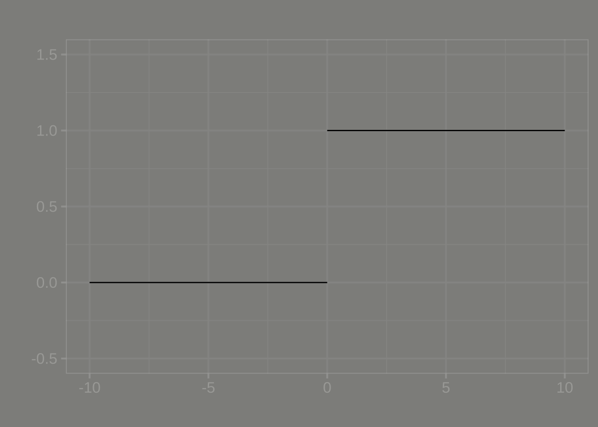
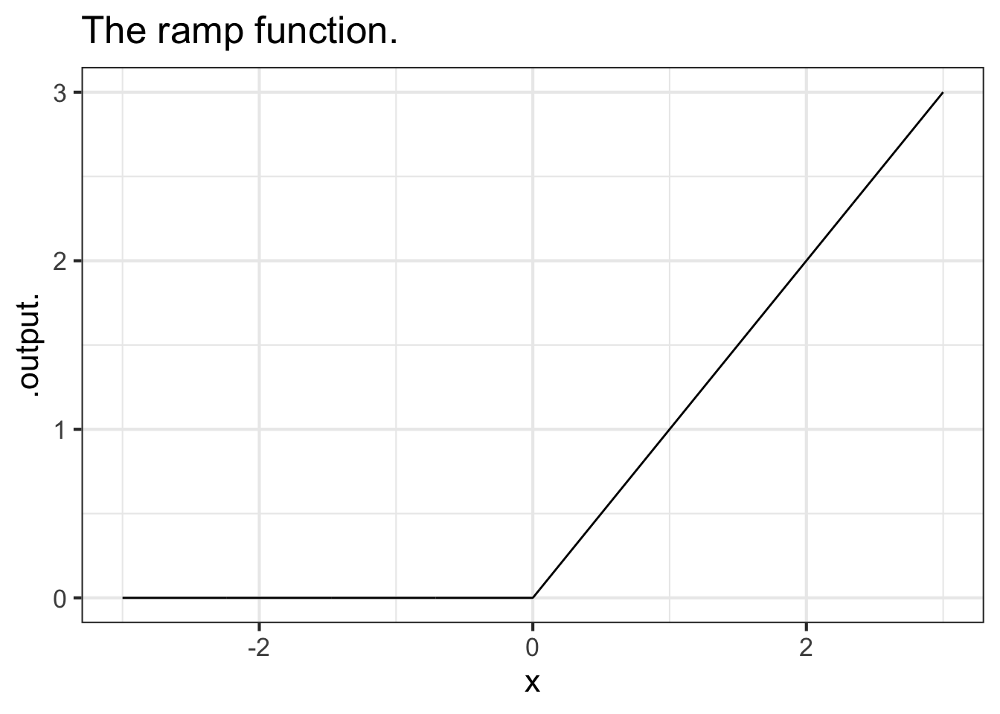

You’ve seen how various properties of a function—whether it is monotonic, how it slopes, whether it is concave up or down (or not at all), curvature, etc.—can be related to the first and second derivatives of the function.
In this chapter, we’ll elaborate on continuity, one of the ideas introduced in ?sec-word-descriptions, and use the concept of continuity to characterize functions in a new way: their smoothness.
22.1 Continuity
The intuition behind continuity is simple: If you can draw the graph of a function without lifting the pencil from the paper, the function is continuous.
Continuity can be an important attribute of a modeling function. Often, we are modeling phenomena where a small change in input is expected to produce a small change in output. For instance, if your income changes by one penny, you would expect your lifestyle not to change by much. If the temperature of an oven changes by 1 degree, you don’t expect the quality of the cake you are baking to change in any noticeable way.

Figure 22.1: The Heaviside function is piecewise constant with a discontiuity at \(x=0\).
All of our basic modeling functions are continuous over their entire input domain.1 To illustrate discontinuity we’ll consider piecewise functions, as introduced in ?sec-fun-piecewise. The Heaviside function, graphed in Figure 22.1 is discontinuous.
Drawing the graph of the Heaviside function \(H(x)\) involves lifting the pencil at \(x=0\).
In contrast, the piecewise ramp function (Figure 22.2) is continuous; you don’t need to lift the pencil from the paper in order to draw the ramp function.

Figure 22.2: The ramp function is a continuous piecewise function.
Imagine that you were constructing a model of plant growth as a function of the amount of water (in cc) provided each day. The plant needs about 20 cc of water to thrive. Let’s say that you use the Heaviside function for the model, say \(H(W-20)\), where an output of 1 means the plant thrives and a output 0 means the plant does not. The model implies that if you provide 20.001 cc of water, the plant will thrive. But if you are stingy, and provide only 19.999 cc of water, the plant will die. In other words, a very small change in the input can lead to a large change in the output.
Common sense suggests that a change of 0.002 cc in the amount of water—that’s a small fraction of a drop, 2 cubic millimeters of volume, is not going to lead to a qualitative change in output. So you might prefer to use a sigmoidal function as your model rather than a Heaviside function.
On the other hand, sometimes a very small change in input does lead to a large change in output. For instance, a sensible model of the hardness of water as a function of temperature would include a discontinuity at \(32^\circ\)F, the temperature at which water turns to ice.
One of author Charles Dickens’s famous characters described the relationship between income, expenditure, and happiness this way:
“Annual income 20 pounds, annual expenditure 19 [pounds] 19 [shillings] and six [pence], result happiness. Annual income 20 pounds, annual expenditure 20 pounds ought and six, result misery.” — the character Wilkins Micawber in David Copperfield
Macawber was referring to the common situation in pre-20th century England of putting debtors in prison, regardless of the size of their debt. Macawber’s statement suggests he would model happiness as a Heaviside function \(H(\text{income}- \text{expenditure})\).
Whenever the output of a function is a binary (yes-or-no) value, you can anticipate that a model will involve a discontinuous function.
22.2 Discontinuity
Recall the logical path that led us to the idea of the derivative of a function. We started with the differencing operator, which takes as input a function and a “small” value of \(h\): \[{\cal D}_x f(x) \equiv \frac{f(x+h) - f(x)}{h}\] Then, through algebraic manipulation and numerical experiments we found that, once \(h\) is small enough, the graph of the slope function \({\cal D}_x f(x)\) does not depend on \(h\). And so we defined a function \(\partial_x f(x)\) where \(h\) doesn’t play a role, writing \(\lim_{h\rightarrow 0}\) to remember our care to never divide by zero. \[\partial_x f(x) \equiv \lim_{h\rightarrow 0} \frac{f(x+h) - f(x)}{h}\ .\] Conveniently, we found that the derivatives of the pattern-book functions can be written in terms of the pattern-book functions without making any reference to \(h\). For instance:
\(\partial_x \ln(x) = 1/x\) No \(h\) appears.
\(\partial_x e^x = e^x\) No \(h\) appears
\(\partial_x x^p = p\, x^{p-1}\) No \(h\) appears.
and so on.
With discontinuous functions, we have no such luck. Figure 22.3 shows what happens if we compute \({\cal D}_x H(x)\), the derivative of the Heaviside function, for smaller and smaller \(h\).
Figure 22.3: \({\cal D}_x H(x)\), the slope function of the discontinuous Heaviside, function, depends on the value of \(h\) used for the slope function. (Red: \(h=0.1\); Green: \(h=0.01\); Blue \(h=0.001\))
Differencing the Heaviside function produces very different functions depending on the value of \(h\). The bump near \(x=0\) gets taller and taller as \(h\) gets smaller. Mathematicians would describe this situation as \[\lim_{h\rightarrow0}{\cal D}_x H(x=0) \equiv \lim_{h\rightarrow 0} \frac{H(0+h) - H(0)}{h}\ \ \ \text{does not exist}.\] Of course, for any given value of \(h\), e.g. \(h=0.000001\), the function \({\cal D}_x H(x)\) has a definite shape. But that shape keeps changing as \(h \rightarrow 0\), so we can’t point to any specific shape as the “limit as \(h \rightarrow 0\).”
Since there is no convergence in the shape of \({\cal D}_x H(0)\) as \(h\) gets smaller, it’s fair to say that the Heaviside function does not have a derivative at \(x=0\). But away from \(x=0\), the Heaviside function has a perfectly sensible derivative: \(\partial_x H(x) = 0\) for \(x\neq 0\). But there is no derivative at \(x=0\).
22.3 Smoothness
Smoothness is a different concept than continuity, although the two are related. Most simply, any discontinuous function is not smooth at any input where a discontinuity occurs. But even the continuous ramp function is not smooth at the start of the ramp. Intuitively, imagine you were sliding your hand along the ramp function. You would feel the crease at \(x=0\).
A function is not smooth if the derivative of that function is discontinuous. For instance, the derivative of the ramp function is the Heaviside function, so the ramp is not smooth at \(x=0\).
All of our basic modeling functions are smooth everywhere in their domain. In particular, the derivatives of the basic modeling functions are continuous, as are the second derivative, third derivative, and so on down the line. Such functions are called C-infinity, written \(C^\infty\). The superscript \(\infty\) means that every order of derivative is continuous.
You cannot tell from the plot that the second derivative is discontinuous. But if you were in a plane flying along that trajectory, you would feel a jerk as you crossed \(x=0\).
Mathematicians quantify the “smoothness” of a function by looking at the continuity of the function and its derivatives. The mathematical definition of smoothness is straightforward and phrased in terms of derivatives. Suppose you are examining the smoothness of a function \(f(x)\). The smoothness is assessed on a scale \(C^0, C^1, C^2, \ldots, C^\infty\).
\(C^0\): the function \(f()\) is continuous. Intuitively, this means that a graph of the function can be drawn without lifting the pencil from the paper.
\(C^1\): the function \(f()\) has a derivative over its entire domain and that derivative \(\partial_x f(x)\) is continuous. (See ?fig-c1-function for an example.)
\(C^2\): the function \(\partial_x f(x)\) has a derivative over its entire domain and that derivative is continuous. In other words, \(\partial_{xx} f(x)\) exists and is continuous.
\(C^n\): Like \(C^2\), but we’re talking about the \(n\)th-derivative of \(f(x)\) existing and being continuous.
\(C^\infty\): Usually when we denote a sequence with an infinite number of terms, we write down something like \(C^0, C^1, C^2, \ldots\). It would be entirely valid to do this in talking about the \(C^n\) sequence. But many of the mathematical functions we work with are infinitely differentiable, that is \(C^\infty\).
Examples of \(C^\infty\) functions:
\(\sin(x)\): the derivatives are \(\partial_x \sin(x) = \cos(x)\), \(\partial_{xx} \sin(x) = -\sin(x)\), \(\partial_{xxx} \sin(x) =-\cos(x)\), \(\partial_{xxxx} \sin(x) =\sin(x)\), … You can keep going infinitely.
\(e^x\): the derivatives are \(\partial_x e^x = e^x\), \(\partial_{xx} e^x = e^x\), and so on.
\(x^2\): the derivatives are \(\partial_x x^2 = 2 x\), \(\partial_{xx} x^2 = 2\), \(\partial_{xxx} x^2 = 0\), … Higher order derivatives are all simply 0. Boring, but still existing.
Example of non-\(C^2\) functions: We see these often when we take two or more different \(C^\infty\) functions and split their domain, using one function for one subdomain and the other(s) for other subdomain(s).
\(|x|\), the absolute value function. \(|x|\) is a pasting together of two \(C^\infty\) functions: \[|x| \equiv \left\{\begin{array}{rcl}+x & \text{for} & 0 \leq x\\-x&\text{for}& \text{otherwise}\end{array} \right.\ .\] The domain is split at \(x=0\).
For engineering and design problems, smoothness means something substantially different than described by the mathematical concepts above. Later in the course we’ll introduce cubic splines which are continuous functions defined by a finite set of coordinate pairs, as in a data frame. Each line of the data frame corresponds to a dot in a scatter plot, but in a cubic spline it is called a “knot point.” The spline consists of cubic polynomials drawn between consecutive knot points. The domain is split at each of the knot points. Between any two adjacent knot points, the function is an ordinary cubic polynomial. At a knot point, the cubics on either side have been arranged to have their first and second derivatives match. Thus, the first two derivatives are continuous. The function is at least \(C^2\). The second derivative of a cubic is a straight-line function, so the second derivative of a cubic spline is a series of straight-line functions connected at the knot points. The second derivative does not itself have a derivative at the knot points. So, a cubic spline cannot satisfy the requirements for being \(C^3\); it is \(C^2\).
22.4 Exercises
The domain of the function \(1/x\) is the whole number line, except 0, where the positive and negative branches fail to meet up.↩︎